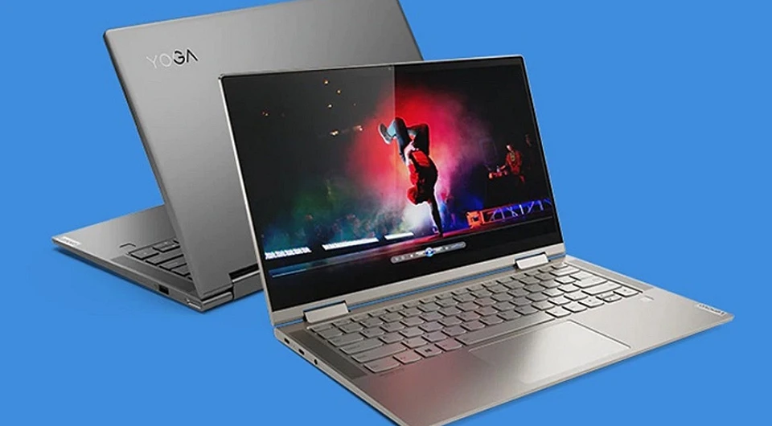
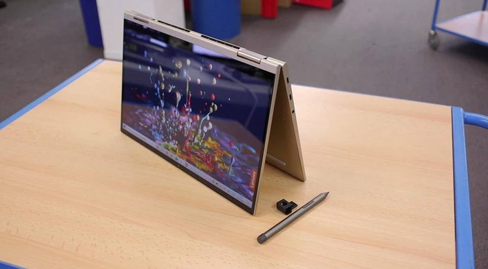
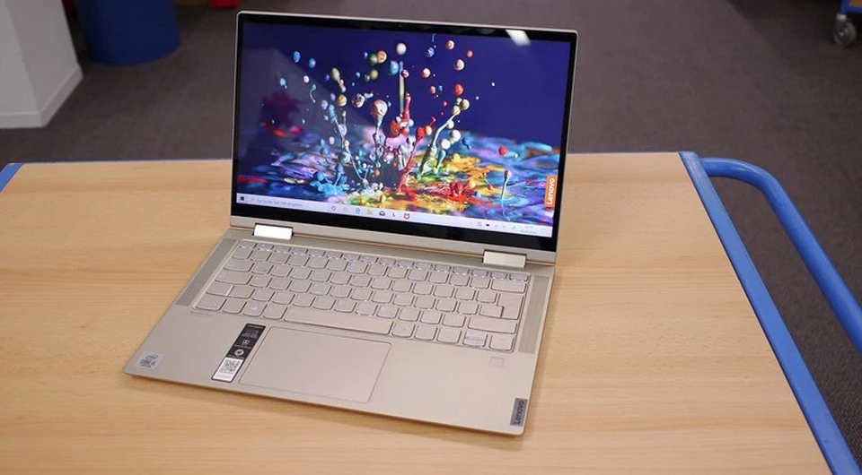
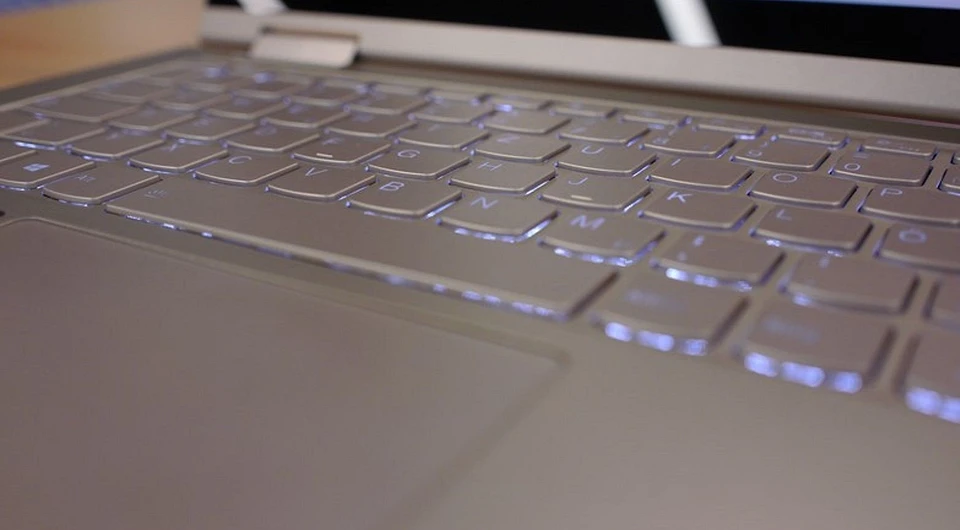

Контакты:
+79125349944
TehnoObzor@gmail.com
Lenovo Yoga C740-14IML оснащен процессором десятого поколения Intel Core i и быстрым накопителем SSD. Также ноутбук радует хорошим дисплеем и длительным временем от работы батареи.

Десятое поколение Intel Intel Core i — это самые актуальные процессоры. Они включают в себя две версии с серьезно различающейся архитектурой в диапазоне 15 Вт. Версии, названные Ice Lake, полностью переработаны и предназначены, прежде всего, для экономии энергии и нацелены на отличную графическую производительность. Серия Intel под кодовым названием Comet Lake — как раз с ней мы имеем дело здесь в 14-дюймовом Lenovo — это всего лишь незначительный пересмотр известных процессоров Whiskey Lake. Прежде всего, они обещают более высокую частоту в режиме Boost и, следовательно, лучшую краткосрочную пиковую производительность.
Lenovo Yoga C740-14IML (81TC002RGE) оснащен Intel Core i5-10210U, 8 гигабайтами памяти и очень быстрым SSD с 512 гигабайтами памяти. По нашим тестам видно, что устройство обеспечивает отличную производительность, особенно при краткосрочных пиковых нагрузках. Yoga C740-14IML может довольно долго поддерживать высокую частоту в режиме Boost и, таким образом, обеспечивает очень хорошую повседневную производительность. Однако для постоянной нагрузки этот режим не предназначен. Lenovo делает ставку на тихий вентилятор, поэтому тонкий ноутбук при постоянной нагрузке не дотягивает до производительности других устройств.

Хороший, хотя и не идеальный: у 14-дюймового дисплея не только сенсорный ввод, но и 360-градусный шарнир для режима планшета или презентации. Кроме того, с разрешением Full HD (306 кд/м²) он показывает отличную яркость. Покрытие цветового пространства sRGB на 98% обещает насыщенные цвета.
Дисплей поддерживает HDR: если эта функция активирована в Windows, можно воспроизводить видео с высоким динамическим диапазоном. Некоторые минусы возникают из-за зеркальной поверхности и угла обзора: панель IPS в принципе дает довольно неплохой угол обзора, что означает, что даже при просмотре сбоку не возникает инверсии цвета, и хорошо сохраняется контраст. Но всё же при боковом просмотре контраст ухудшается быстрее, чем на других панелях IPS. В верхней части дисплея находится веб-камера, которую можно закрыть с помощью специального затвора.

В целом алюминиевый корпус устройства выглядит шикарно и на ощупь тоже очень приятен. Несмотря на относительно острые углы, устройство хорошо лежит в руке и обладает хорошей прочностью на изгиб. У клавиатуры с подсветкой не очень высокая глубина хода, но зато у нее удивительно четкий и приятный звук, без раздражающих щелчков. Никаких минусов мы не нашли и у кликпада.
Под клавишами со стрелками находится датчик отпечатков пальцев, который обеспечивает безопасный и быстрый вход в Windows. Что касается звучания ноутбука, то тут можно отметить сразу два положительных аспекта: как уже упоминалось, вентилятор даже при полной нагрузке почти не слышен. Кроме того, в ноутбук установлены динамики Dolby Atmos. Конечно, они не обеспечивают объемный звук на уровне домашней системы Hi-Fi, но для такого компактного и небольшого устройства он очень хороший и мощный.

В тесте Lenovo Yoga C740-14IML (81TC002RGE) показал себя как очень удачная модель. Устройство оснащено процессором десятого поколения Intel Core i и очень быстрым накопителем SSD. Также ноутбук порадовал нас хорошим дисплеем, который с использованием функции трансформации позволяет превратить ноутбук в планшет. Мы оцениваем мобильность новинки как отличную. Несмотря на то, что Yoga C740 — это небольшой легкий ноутбук с функцией трансформера, он обладает длительным временем автономной работы от батареи. Кроме того, цена для устройства с поддержкой HDR и Dolby Atmos вполне справедливая.
Контакты:
+79125349944
TehnoObzor@gmail.com